PKD 不安戦 プレイ確認資料（2026-09-03）
元動画情報
全編コンタクトシート（0.5秒間隔）
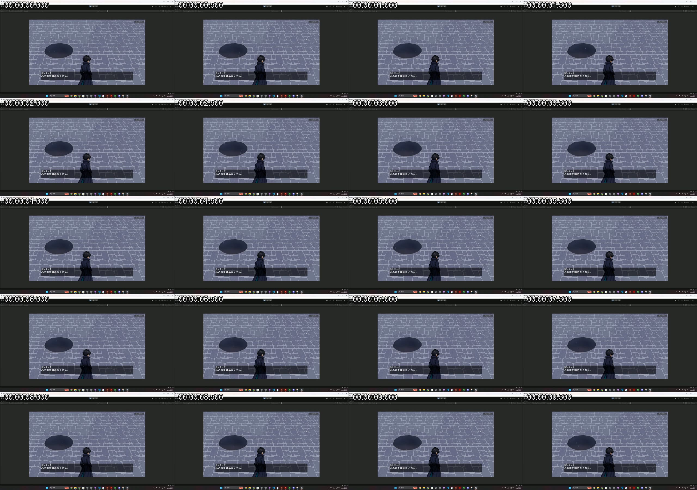
00:00.0 - 00:10.0
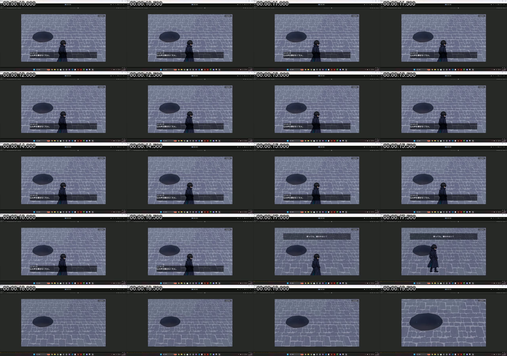
00:10.0 - 00:20.0
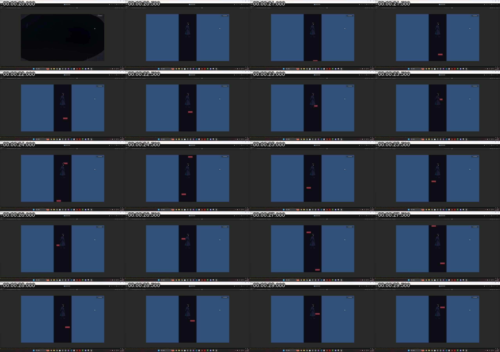
00:20.0 - 00:30.0
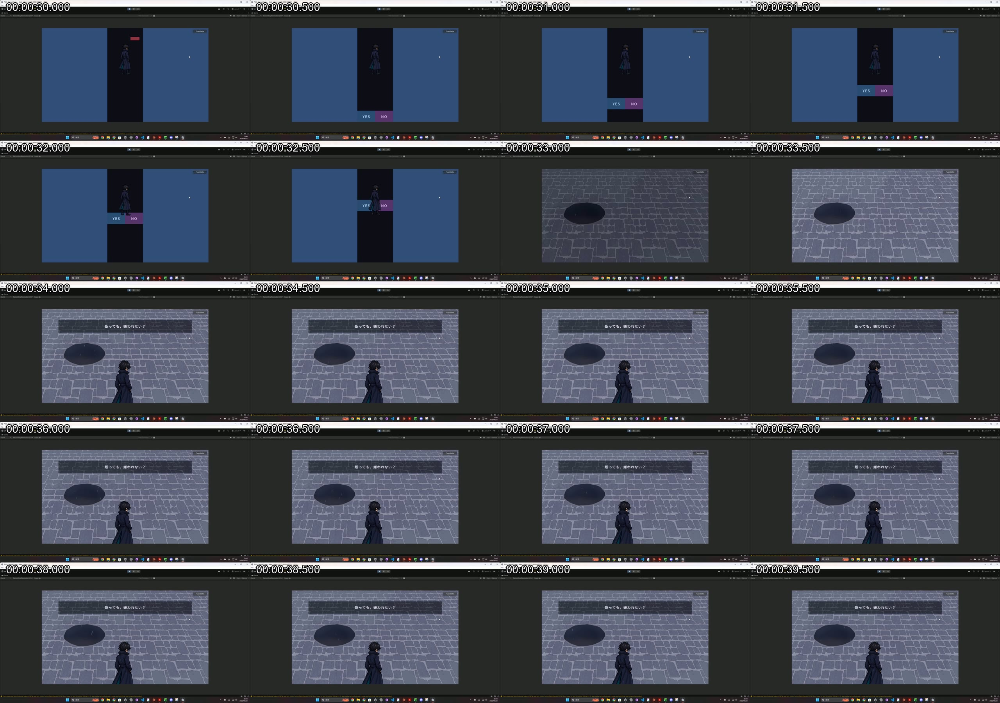
00:30.0 - 00:40.0
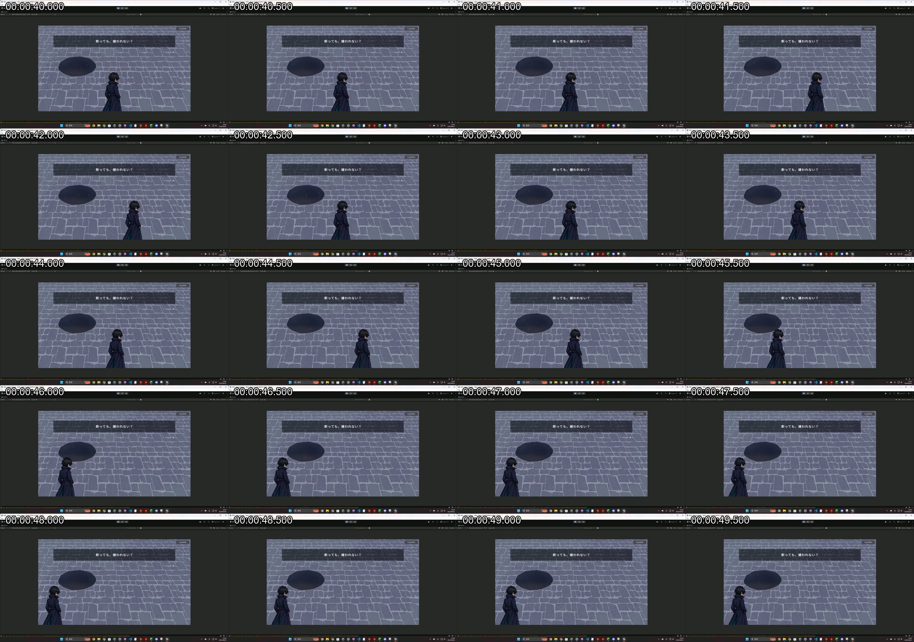
00:40.0 - 00:50.0
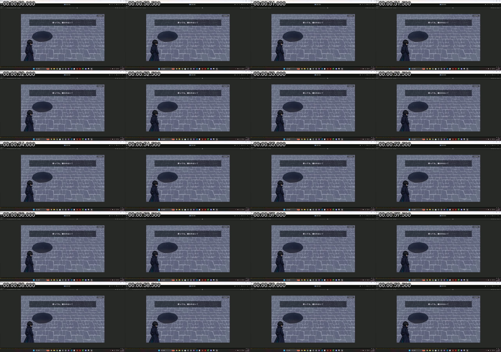
00:50.0 - 01:00.0
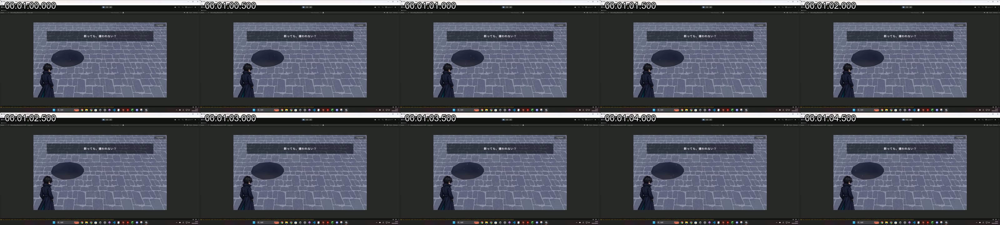
01:00.0 - 01:05.0
地上で穴へ近づく
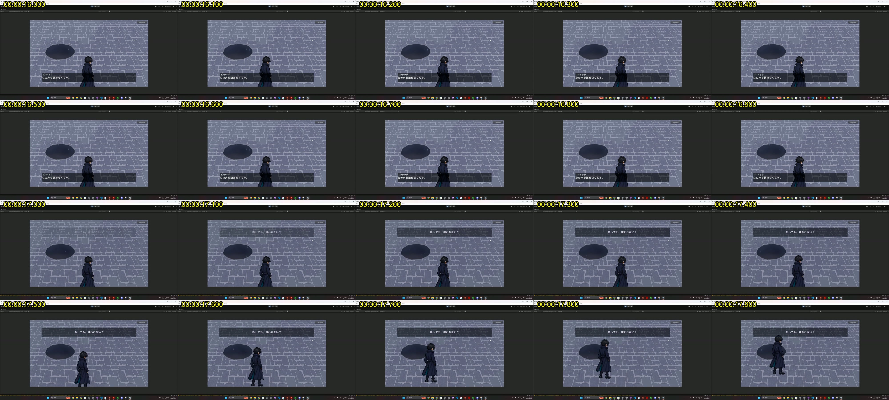
00:16.0 - 00:18.0
穴への侵入
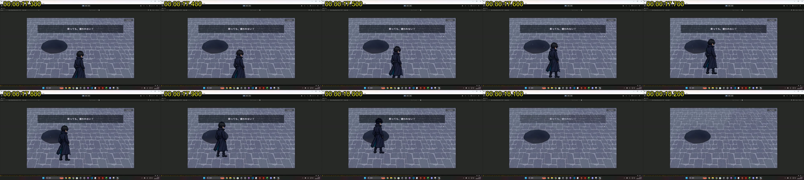
00:17.3 - 00:18.3
穴 → 落下への遷移
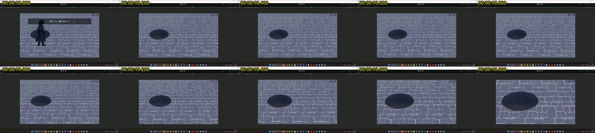
00:18.0 - 00:20.0
落下開始
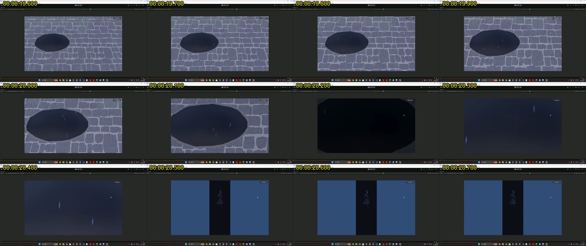
00:19.6 - 00:20.8
Spaceスロー
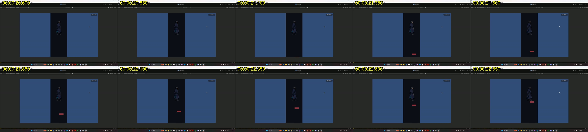
00:20.6 - 00:23.1（発動はおおよそ00:21.1前後と推定）
YES/NO出現
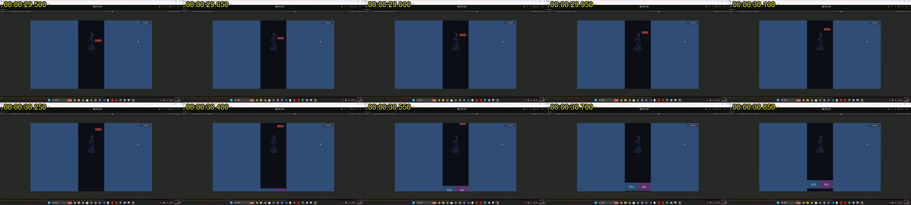
00:29.5 - 00:31.0
回答確定（NO）
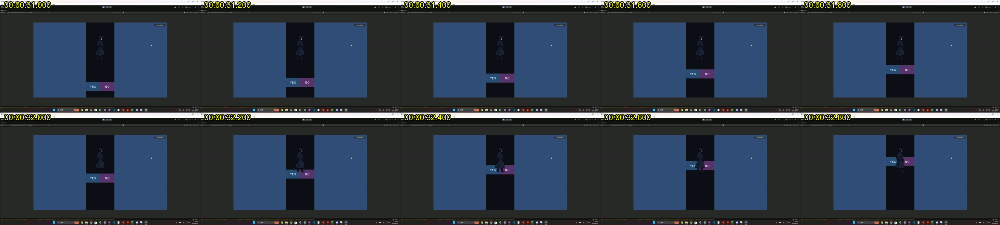
00:31.0 - 00:33.0
地上復帰
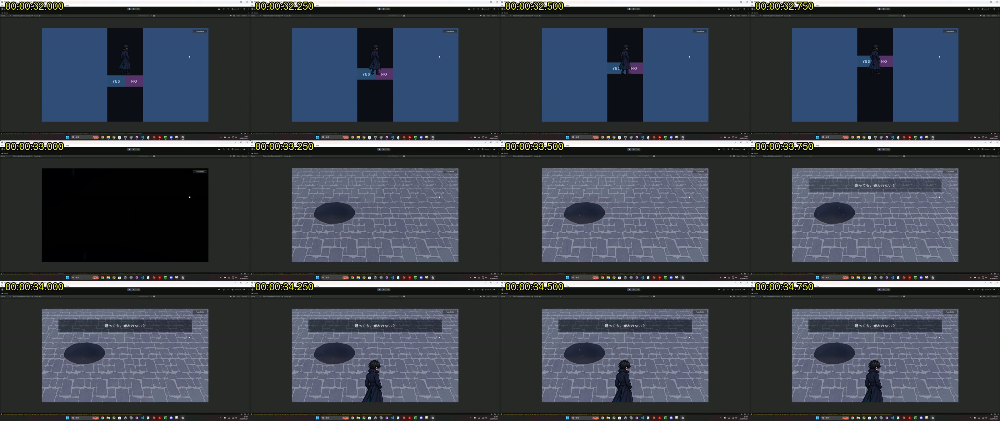
00:32.0 - 00:35.0